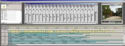

|
Now
you've read all this, this is how to do it:
-
Download the Main Concept Demo Codec from: www.mainconcept.com.
If you like their latest version after testing this,
buy it.
- Create
a Folder on your C drive named QCAP.
- Move
the Qcap.dll from your System32 directory to the Qcap
folder you just created, then back up qcap.dll to
a floppy for safety.
- Now,
do a search on your C drive for qcap.dll and make
sure it ONLY comes up in the QCAP folder you just
created. If it shows up anywhere else DELETE it. You
can always move it back to the system 32 directory
where it belongs if you decide you don't want this
fix enabled.
NOTE -- Win 2k users: Make sure you enabled the registry
tweak or qcap.dll will keep getting copied back to
your system32 directory automatically courtesy of
SFC and Microsoft.
- Install
the Main Concept codec, you can test this with the
Demo off their site.
- Copy
the presets from the zip file below into your Premiere
settings directory. We have supplied 4: NTSC/PAL Interlaced
and NTSC/PAL Progressive. They start with DVMC------
- Start
Premiere 6. Select one of the supplied presets.
- Go
into settings. Make sure it says DV Playback.
- Go
to video settings and there magically you will find
all the codecs. The Main Concept codec should be selected.
Although you can at this point select other codecs
they will most likely NOT work with the Premiere DV
module. All the other settings will match proper DV
settings.
- Make
sure you NEVER check always recompress.
- In
the Video Settings hit the Configure tab for the MainConcept
codec and make sure all the radio buttons are DE-SELECTED
as selecting some of them have caused some output
issues. Deselecting them all gives the highest quality
compression anyway.
- Now
you can go into the Premiere capture settings and
set them up. Save the settings as you wish, preferably
some other name so you will always have a master template.
Note: If you try and adjust capture settings without
qcap.dll in the system32 directory, you will get the
cannot connect to Capture Device error message.
- You're
all done.
At
this point you can capture with the MS codec as a wrapper.
You have to have the qcap.dll file in the original location
(Windows System folder) to be able to capture. Once
done, remove the qcap.dll file from the System folder
with Premiere 6 not running and restart Premiere 6 when
you've done that. Now you can edit clips and apply filters/transitions,
etc. when you reload your project with the Presets we
supplied you with. Premiere will use the MainConcept
codec to render previews with. You then set up your
export settings to use it to export the same way as
a Microsoft AVI using the MainConcept codec. Make sure
your settings match the project settings EXACTLY and
do not check 'always recompress'. To help you do all
this switching, Ross (www.geocities.com/aussie01au/)
did write two batch files to do all the switching and
moving of files for you.
This
is how to use these batch files: they are designed to
be used with a Windows 98 system, where the qcap.dll
file is in the Windows\System folder. If it is in another
folder (like on Windows 2000), you will have to modify
these batch files. Since you can load them in Notepad
to do that, it's really easy.
There
are two batch files: MS_DV and MC_DV. MS_DV does copy
the qcap.dll file back to the Windows\System folder.
You use this one, when Premiere 6 is not running, to
be able to use the MS DV codec in Premiere 6 (to capture)
and other software that needs this file in it's normal
place. The MC_DV file does move the qcap.dll file from
the Windows\System folder to the c:\qcap folder you
have created manually, and starts Premiere 6 automatically.
You can tweak the two files and especially the MS_DV
file, by making copies of it and adding a line to start
other software that needs to have the qcap.dll file
in the System folder. Think about it: use these batch
files to start your DV software instead of the normal
shortcuts. They move the qcap.dll file to the right
location (to or from the Ssystem folder) and start the
software in the automatically. Open them in Notepad,
study them a bit and try it. You'll see: all this switching
becomes easier than I can explain it!
 If
you've followed these instructions precisely, all MainConcept
codec rendered previews will play out Firewire as will
all alt-scrub actions, trim mode actions, etc. In short,
you have all the benefits of the Adobe generic plugin
but with a professional grade codec. If you are testing
with the MainConcept demo codec the way to know this
is working is that you will see the MC demo watermark
on all rendered footage. If
you've followed these instructions precisely, all MainConcept
codec rendered previews will play out Firewire as will
all alt-scrub actions, trim mode actions, etc. In short,
you have all the benefits of the Adobe generic plugin
but with a professional grade codec. If you are testing
with the MainConcept demo codec the way to know this
is working is that you will see the MC demo watermark
on all rendered footage.
You
can download the presets, batch files and the registry
tweak for Windows 2000 here.
The MainConcept codec can be downloaded here
(make sure you get the latest codec!). Remember: they
only work if you create the c:\qcap folder yourself
and the qcap.dll file is in the Windows\System folder.
If not, you have to edit these files in Notepad!
This
information is provided by Alan. He prefers to remain
unknown. He cannot be contacted for support and additional
info. But the trick works and works well. Just make
sure you follow these instructions step by step and
to the letter!
top
|